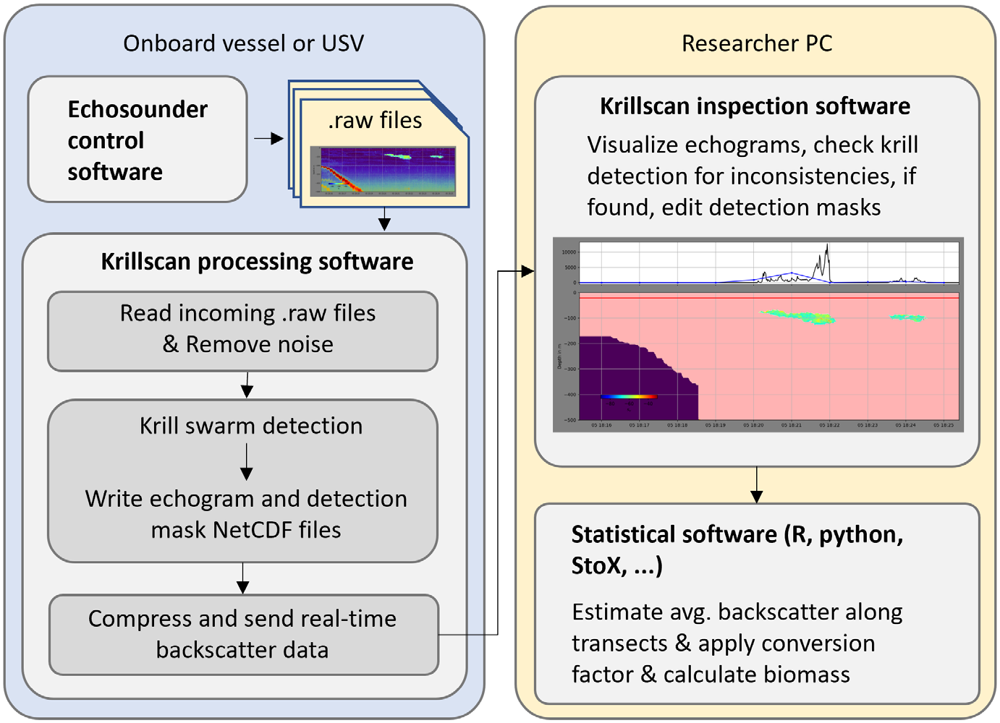
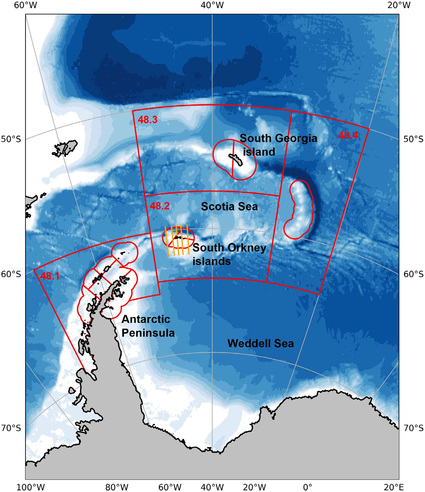
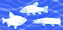
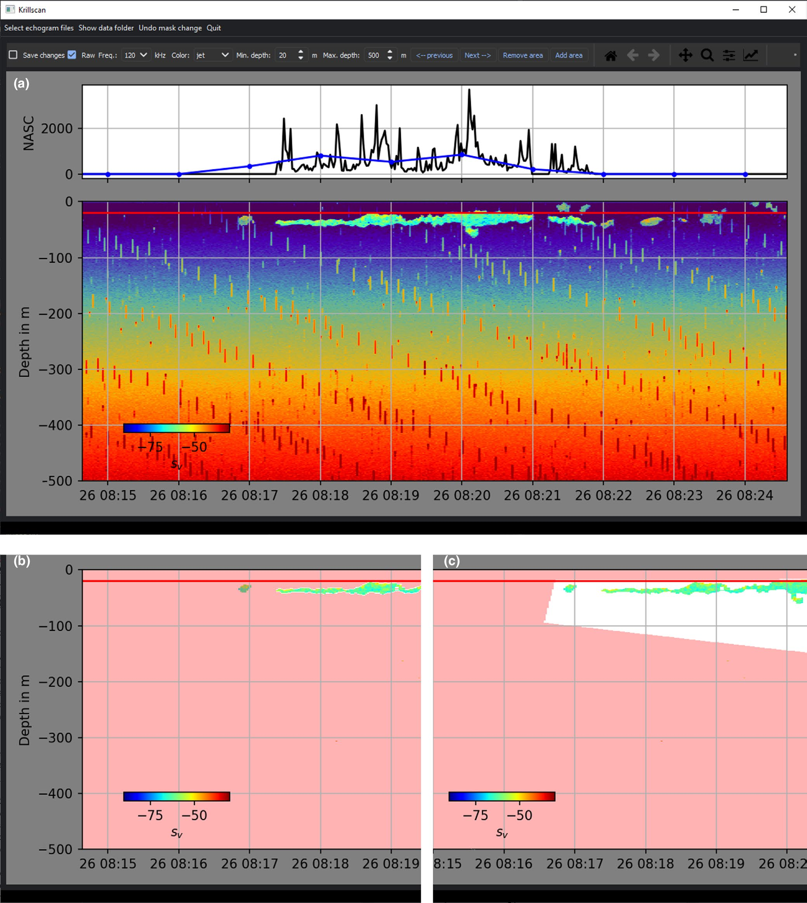
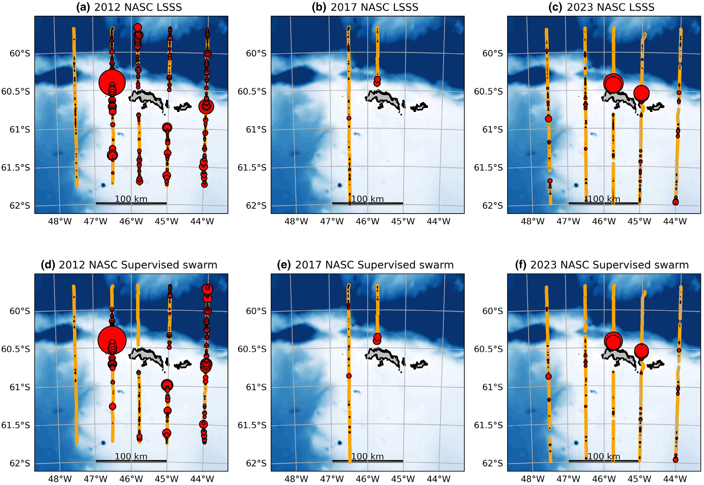
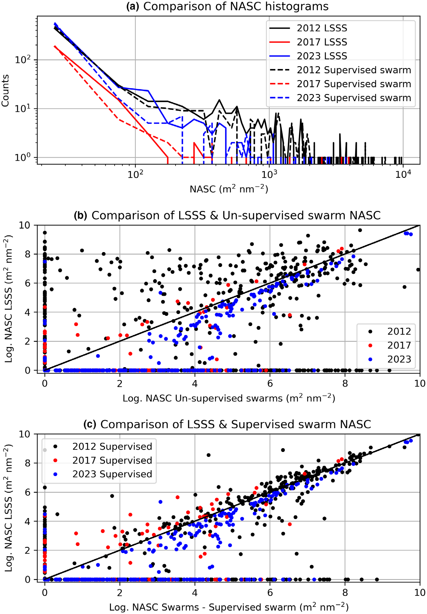
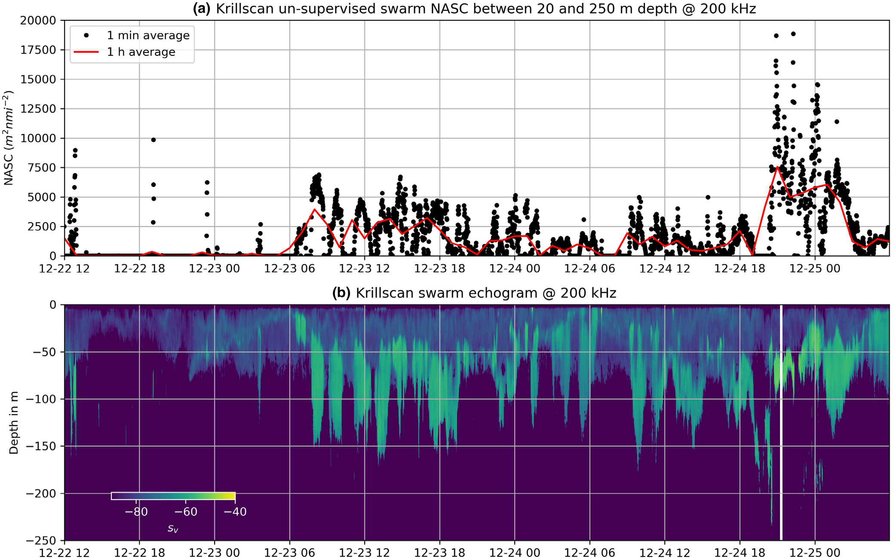
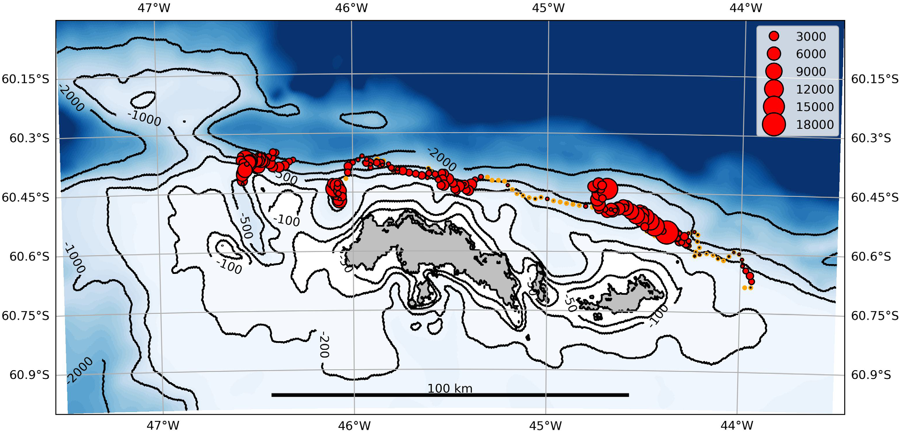

KRILLSCAN: An automated open‐source software for processing and analysis of echosounder data from the Antarctic krill fishery

| Architecture Type | Automated Processing Pipeline (Python-based) |
|---|---|
| Key Innovation | Open-source automation of krill swarm detection and 100x data compression for remote monitoring. |
| Performance Metric | 0.96 correlation with manual LSSS analysis; 6% NASC underestimation. |
| Computational Efficiency | Near-real-time processing (faster than data generation) on standard consumer hardware. |
| Venue | Fisheries Management and Ecology |
| Year | 2024 |
| Citations | 2 |
| DOI | Link |
KRILLSCAN is an automated, open-source Python-based software developed to process and analyze echosounder data from the Antarctic krill fishery. It addresses the need for rapid, transparent, and reproducible biomass estimation, enabling near-real-time data analysis and transfer from fishing vessels of opportunity. The software automates noise removal, bottom detection, and swarm identification, achieving a high correlation (0.96) with traditional manual scrutinization while compressing data by up to 100 times for satellite transmission.
Automated Processing Pipeline
KRILLSCAN utilizes a dual-thread architecture to handle echosounder data in real-time. One thread performs an IO loop that scans for new proprietary Simrad .raw files, while a parallel communications loop manages data transmission. The software employs standardized scientific Python modules, including 'echopy' and 'pyecholab2', to clean the raw signal by removing impulse and background noise.
After noise removal, the volume backscatter matrices for each frequency (typically 38 and 120 kHz) are loaded into memory. This automated pipeline ensures that data is processed faster than it is generated, a critical requirement for onboard deployment on fishing vessels where specialized scientific personnel may not be present.
Krill Swarm Detection and Integration
A core component of KRILLSCAN is its swarm detection algorithm, based on the SHAPES method. This algorithm identifies contiguous patches of backscatter that exceed a predefined threshold (set to -70 dB for krill). It employs a series of image morphological operations, specifically erosion and dilation, to suppress noise and refine the outlines of detected swarms.
The software integrates the backscatter within these detection masks to calculate the Nautical Area Scattering Coefficient (nasc), a standard metric for biomass distribution. Figure 3 shows the graphical interface where these masks are overlaid on the echogram for visual verification.
Data Compression and Satellite Transfer
To overcome the bandwidth limitations of satellite communication in the Southern Ocean, KRILLSCAN implements aggressive data compression. Processed raw echograms are stored in the open netcdf format in 10-minute 'snippets'. These files, along with 1-minute averaged nasc tables, can be compressed up to 100 times compared to the original raw data.
This reduction allows for a 4-hour survey block to be transmitted as a 2–5 MiB file via email. This capability enables remote monitoring and quality control by shore-based scientists, allowing fishing vessels to act as 'platforms of opportunity' for continuous ecosystem monitoring. Figure 2 illustrates this remote data flow.
Comparative Validation with Manual Scrutinization

The accuracy of KRILLSCAN was tested against traditional manual scrutinization using the Large Scale Survey System (LSSS). Analysis of data from Norwegian krill surveys (2011–2023) showed that KRILLSCAN's automated nasc estimates were strongly correlated (0.96) with manual results. While the software slightly underestimated total nasc by approximately 6%, this offset was consistent across the encountered biomass range.
This consistency, combined with the reproducibility of open-source algorithms, offers a significant advantage over manual analysis, which can be prone to operator bias. Figure 5 displays the strong linear relationship between the automated and manual results across various survey years.
Concept Breakdown
A standard unit ($m^2/nmi^2$) used in fisheries acoustics to quantify the total sound backscattered from a specific area, serving as a proxy for biological biomass.
A morphological processing technique used to identify and isolate contiguous biological aggregations, such as krill swarms, from background noise and other acoustic targets.
The Network Common Data Form; a self-describing, machine-independent data format used by KRILLSCAN to ensure interoperability and open access to processed acoustic data.
A fisheries management strategy that uses real-time data to dynamically adjust catch limits and spatial allocations based on current stock status.
Non-scientific vessels, such as commercial fishing boats, that are equipped with automated systems to collect valuable scientific data during their normal operations.
Mathematics
Nautical Area Scattering Coefficient (NASC)
| Symbol | Meaning |
|---|---|
| $s_A$ | Nautical Area Scattering Coefficient ($m^2/nmi^2$) |
| $s_v$ | Volume backscattering coefficient |
| $dz$ | Depth interval |
Coefficient of Variation (CV)
| Symbol | Meaning |
|---|---|
| $\sigma$ | Standard deviation of the NASC differences |
| $\mu$ | Mean NASC value |
Figures and Explanations

Data flow chart showing the end-to-end process from onboard raw data collection to KRILLSCAN processing, satellite transfer, and final shore-based biomass estimation.

Screenshot of the KRILLSCAN Graphical User Interface, demonstrating the red swarm detection masks overlaid on multifrequency echograms and real-time NASC graphs.

Regression analysis comparing LSSS and KRILLSCAN results, confirming a 0.96 correlation and establishing the reliability of the automated system.













See Also
References
- Classification of acoustic survey data: A comparison between seven teams of experts - Johanna Fall, Harald Gjøsæter et al. (2024)
- What is needed to implement a sustainable expansion of the Antarctic krill fishery in the Southern Ocean? - P. Trathan (2023)
- Distribution and biomass estimation of Antarctic krill (Euphausia superba) off the South Orkney Islands during 2011–2020 - G. Skaret, G. Macaulay et al. (2023)
- Using a risk assessment framework to spatially and temporally spread the fishery catch limit for Antarctic krill in the west Antarctic Peninsula: A template for krill fisheries elsewhere - V. Warwick‐Evans, A. Constable et al. (2022)
- A statistical assessment of the density of Antarctic krill based on “chaotic” acoustic data collected by a commercial fishing vessel - Yunxia Zhao, Xinliang Wang et al. (2022)
- Remote sizing of fish-like targets using broadband acoustics - Rokas Kubilius, G. Macaulay et al. (2020)
- Machine intelligence and the data-driven future of marine science - K. Malde, N. Handegard et al. (2020)
- Acoustic classification in multifrequency echosounder data using deep convolutional neural networks - Olav Brautaset, A. U. Waldeland et al. (2020)
- Summer distribution and demography of Antarctic krill Euphausia superba Dana, 1850 (Euphausiacea) at the South Orkney Islands, 2011–2015 - B. Krafft, L. Krag et al. (2018)
- Measurement of the volume-backscattering spectrum from an aggregation of Antarctic krill and inference of their length-frequency distribution - K. Amakasu, T. Mukai et al. (2017)
- Acoustic identification of marine species using a feature library - R. Korneliussen, Y. Heggelund et al. (2016)
- Horizontal niche partitioning of humpback and fin whales around the West Antarctic Peninsula: evidence from a concurrent whale and krill survey - H. Herr, S. Viquerat et al. (2016)
- Measuring in situ krill tilt orientation by stereo photogrammetry: examples for Euphausia superba and Meganyctiphanes norvegica - Rokas Kubilius, E. Ona et al. (2015)
- An Antarctic krill (Euphausia superba) hotspot: population characteristics, abundance and vertical structure explored from a krill fishing vessel - B. Krafft, G. Skaret et al. (2015)
- Interannual variability in Antarctic krill (Euphausia superba) density at South Georgia, Southern Ocean: 1997–2013 - Sophie Fielding, J. Watkins et al. (2014)
- Size Selection of Antarctic Krill (Euphausia superba) in Trawls - L. Krag, B. Herrmann et al. (2014)
- Long-term evaluation of scientific-echosounder performance - H. Knudsen (2009)
- Variations in the biomass of Antarctic krill (Euphausia superba) around the South Shetland Islands, 1996–2006 - C. Reiss, Anthony M. Cossio et al. (2008)
- A post-processing technique to estimate the signal-to-noise ratio and remove echosounder background noise - A. D. Robertis, I. Higginbottom (2007)
- The Fishery on Antarctic Krill: Defining an Ecosystem Approach to Management - R. Hewitt, E. Low (2000)